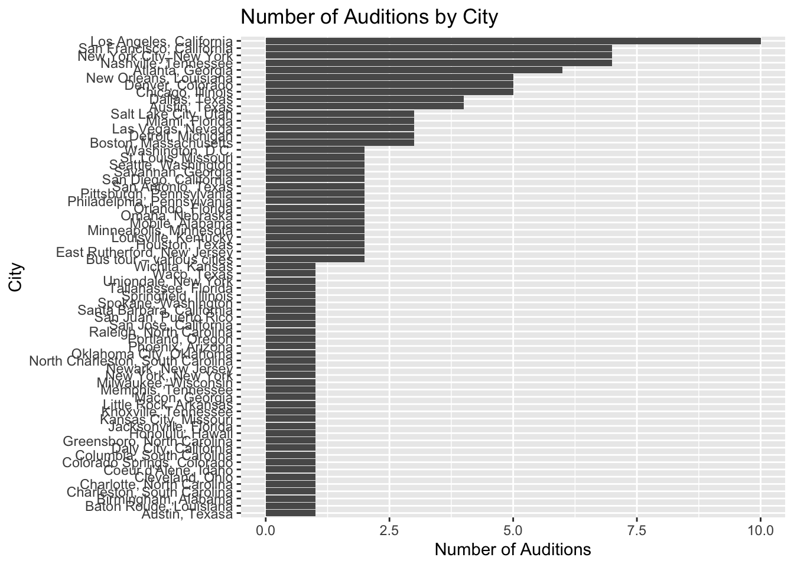
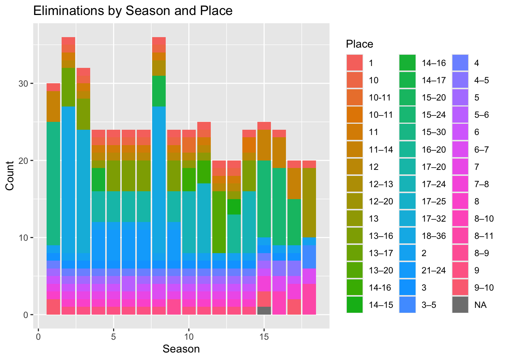
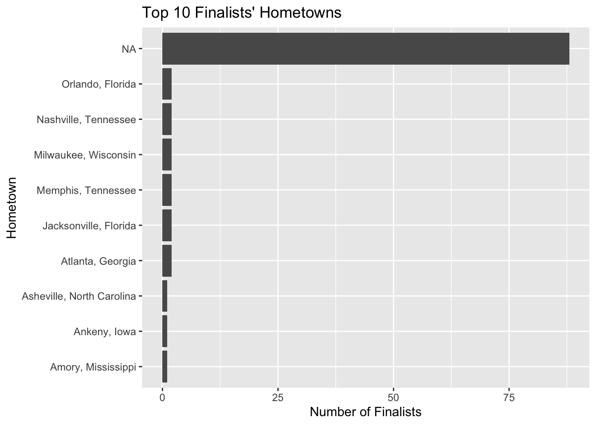
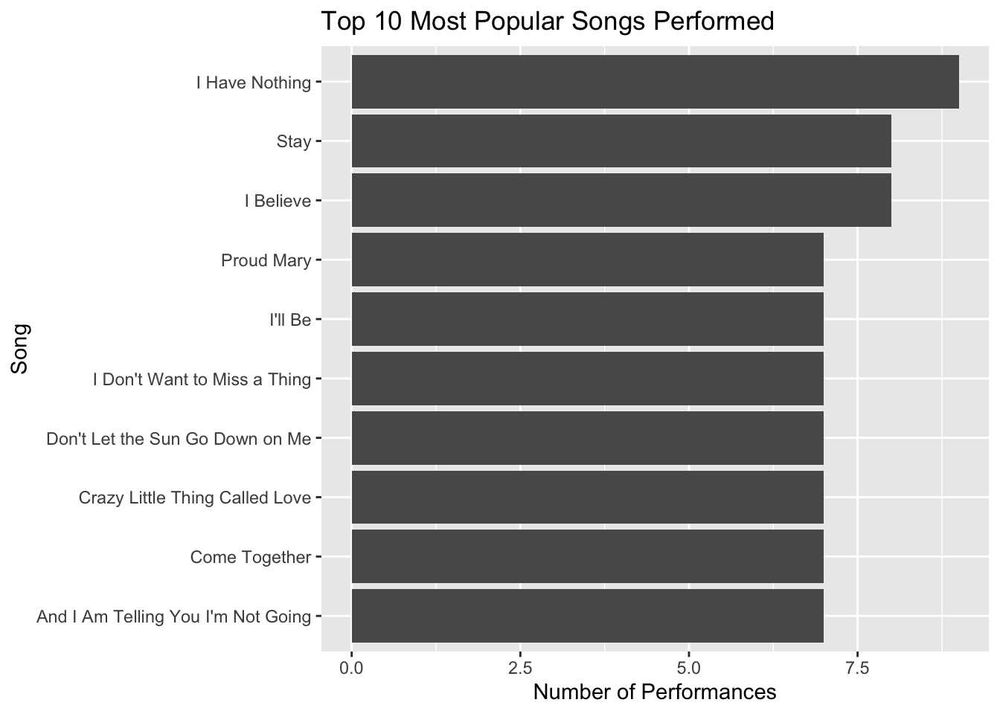
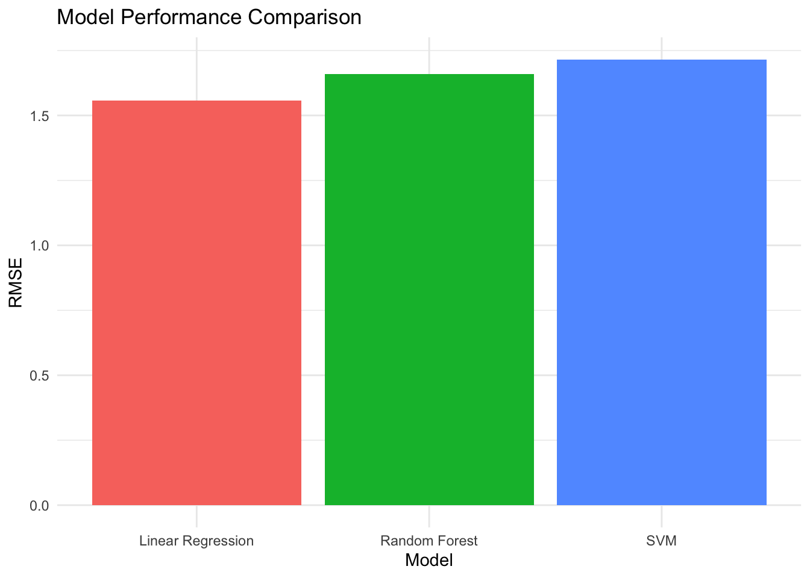
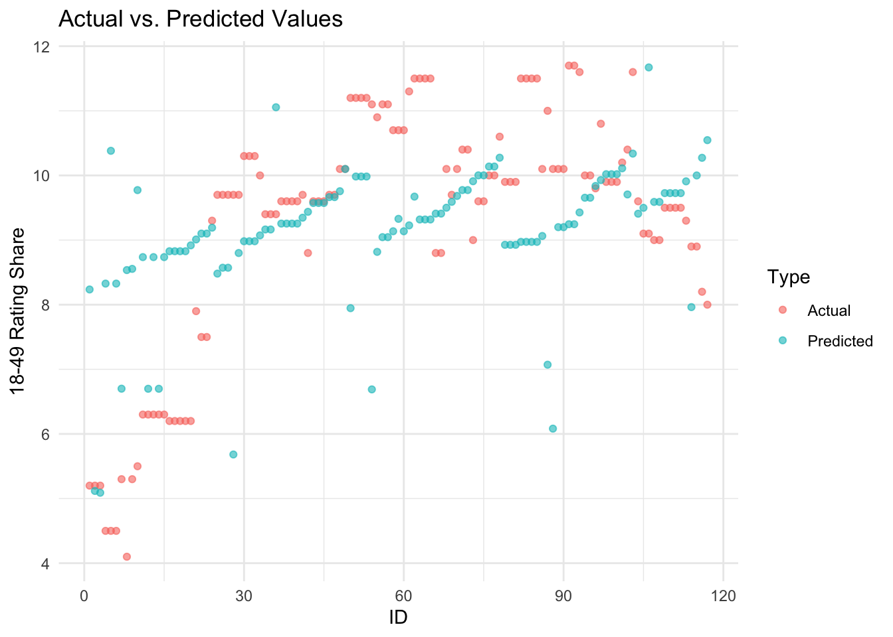

Load, wrangle and explore the data. The EDA part involves making tables/figures to get an idea what your data is about. By now you know this is an iterative procedure, so it’s ok to have these parts of the process/code intertwined.
1.1 Load/Clean the data
library(tidytuesdayR)library(readr)library(dplyr)
Attaching package: 'dplyr'
The following objects are masked from 'package:stats':
filter, lag
The following objects are masked from 'package:base':
intersect, setdiff, setequal, union
The following object is masked from 'package:ggplot2':
last_plot
The following object is masked from 'package:stats':
filter
The following object is masked from 'package:graphics':
layout
# Clean data provided by <https://github.com/kkakey/American_Idol>. No cleaning was necessary.auditions <- readr::read_csv("https://raw.githubusercontent.com/kkakey/American_Idol/main/metadata/auditions.csv")
Rows: 142 Columns: 12
── Column specification ────────────────────────────────────────────────────────
Delimiter: ","
chr (6): audition_city, audition_venue, episodes, episode_air_date, callbac...
dbl (2): season, tickets_to_hollywood
date (4): audition_date_start, audition_date_end, callback_date_start, callb...
ℹ Use `spec()` to retrieve the full column specification for this data.
ℹ Specify the column types or set `show_col_types = FALSE` to quiet this message.
Rows: 456 Columns: 46
── Column specification ────────────────────────────────────────────────────────
Delimiter: ","
chr (44): place, gender, contestant, top_36, top_36_2, top_36_3, top_36_4, t...
dbl (1): season
lgl (1): comeback
ℹ Use `spec()` to retrieve the full column specification for this data.
ℹ Specify the column types or set `show_col_types = FALSE` to quiet this message.
Rows: 190 Columns: 6
── Column specification ────────────────────────────────────────────────────────
Delimiter: ","
chr (5): Contestant, Birthday, Birthplace, Hometown, Description
dbl (1): Season
ℹ Use `spec()` to retrieve the full column specification for this data.
ℹ Specify the column types or set `show_col_types = FALSE` to quiet this message.
Rows: 593 Columns: 17
── Column specification ────────────────────────────────────────────────────────
Delimiter: ","
chr (12): episode, airdate, 18_49_rating_share, timeslot_et, dvr_18_49, dvr_...
dbl (4): season, show_number, viewers_in_millions, nightlyrank
lgl (1): ref
ℹ Use `spec()` to retrieve the full column specification for this data.
ℹ Specify the column types or set `show_col_types = FALSE` to quiet this message.
Rows: 18 Columns: 10
── Column specification ────────────────────────────────────────────────────────
Delimiter: ","
chr (8): winner, runner_up, original_release, original_network, hosted_by, j...
dbl (2): season, no_of_episodes
ℹ Use `spec()` to retrieve the full column specification for this data.
ℹ Specify the column types or set `show_col_types = FALSE` to quiet this message.
Rows: 2429 Columns: 8
── Column specification ────────────────────────────────────────────────────────
Delimiter: ","
chr (7): season, week, contestant, song, artist, song_theme, result
dbl (1): order
ℹ Use `spec()` to retrieve the full column specification for this data.
ℹ Specify the column types or set `show_col_types = FALSE` to quiet this message.
The data cleaning was provided by kkakkey in the ReadMe.md for TidyTuesday 2024-07-23 on Github. Further cleaning will occur if applicable to the hypothesis.
1.2 Explore the data
# Inspect data structure and summariesstr(auditions)
spc_tbl_ [142 × 12] (S3: spec_tbl_df/tbl_df/tbl/data.frame)
$ season : num [1:142] 1 1 1 1 1 1 1 2 2 2 ...
$ audition_date_start : Date[1:142], format: "2002-04-20" "2002-04-23" ...
$ audition_date_end : Date[1:142], format: "2002-04-22" "2002-04-25" ...
$ audition_city : chr [1:142] "Los Angeles, California" "Seattle, Washington" "Chicago, Illinois" "New York City, New York" ...
$ audition_venue : chr [1:142] "Westin Bonaventure Hotel" "Hyatt Regency Hotel" "Congress Plaza Hotel" "Millenium Hilton Hotel" ...
$ episodes : chr [1:142] NA NA NA NA ...
$ episode_air_date : chr [1:142] "11-Jun-02" "11-Jun-02" "11-Jun-02" "11-Jun-02" ...
$ callback_venue : chr [1:142] NA NA NA NA ...
$ callback_date_start : Date[1:142], format: NA NA ...
$ callback_date_end : Date[1:142], format: NA NA ...
$ tickets_to_hollywood: num [1:142] 31 10 23 25 15 11 6 22 35 46 ...
$ guest_judge : chr [1:142] NA NA NA NA ...
- attr(*, "spec")=
.. cols(
.. season = col_double(),
.. audition_date_start = col_date(format = ""),
.. audition_date_end = col_date(format = ""),
.. audition_city = col_character(),
.. audition_venue = col_character(),
.. episodes = col_character(),
.. episode_air_date = col_character(),
.. callback_venue = col_character(),
.. callback_date_start = col_date(format = ""),
.. callback_date_end = col_date(format = ""),
.. tickets_to_hollywood = col_double(),
.. guest_judge = col_character()
.. )
- attr(*, "problems")=<externalptr>
summary(auditions)
season audition_date_start audition_date_end audition_city
Min. : 1.00 Min. :2002-04-20 Min. :2002-04-22 Length:142
1st Qu.: 6.00 1st Qu.:2006-08-11 1st Qu.:2006-08-11 Class :character
Median :10.00 Median :2010-09-05 Median :2010-09-05 Mode :character
Mean :10.37 Mean :2011-04-14 Mean :2011-04-14
3rd Qu.:15.00 3rd Qu.:2015-09-05 3rd Qu.:2015-09-05
Max. :18.00 Max. :2019-09-21 Max. :2019-09-21
audition_venue episodes episode_air_date callback_venue
Length:142 Length:142 Length:142 Length:142
Class :character Class :character Class :character Class :character
Mode :character Mode :character Mode :character Mode :character
callback_date_start callback_date_end tickets_to_hollywood
Min. :2002-02-06 Min. :2002-02-06 Min. : 6.0
1st Qu.:2006-10-02 1st Qu.:2006-10-03 1st Qu.: 20.0
Median :2010-11-09 Median :2010-11-10 Median : 29.0
Mean :2011-06-11 Mean :2011-06-12 Mean : 41.8
3rd Qu.:2015-09-13 3rd Qu.:2015-09-14 3rd Qu.: 37.0
Max. :2019-09-21 Max. :2019-09-21 Max. :561.0
NA's :13 NA's :13 NA's :48
guest_judge
Length:142
Class :character
Mode :character
spc_tbl_ [190 × 6] (S3: spec_tbl_df/tbl_df/tbl/data.frame)
$ Contestant : chr [1:190] "Kelly Clarkson" "Justin Guarini" "Nikki McKibbin" "Tamyra Gray" ...
$ Birthday : chr [1:190] "24-Apr-82" "28-Oct-78" "28-Sep-78" "26-Jul-79" ...
$ Birthplace : chr [1:190] "Fort Worth, Texas" "Columbus, Georgia" "Grand Prairie, Texas" "Takoma Park, Maryland" ...
$ Hometown : chr [1:190] "Burleson, Texas" "Doylestown, Pennsylvania" NA "Atlanta, Georgia" ...
$ Description: chr [1:190] "She performed Aretha Franklin's version of \"Respectand Vanessa Williams' \"Save The Best For Lastin the Hollywood rounds." "He performed Oleta Adams' version of \"Get Herein the Hollywood rounds." "She had previously been on Popstars and auditioned with Gloria Gaynor's \"I Will Surviveand Whitney Houston's \"| __truncated__ "She had appeared on TV commercials and worked with other artists before auditioning for Idol, and was crowned M"| __truncated__ ...
$ Season : num [1:190] 1 1 1 1 1 1 1 1 1 1 ...
- attr(*, "spec")=
.. cols(
.. Contestant = col_character(),
.. Birthday = col_character(),
.. Birthplace = col_character(),
.. Hometown = col_character(),
.. Description = col_character(),
.. Season = col_double()
.. )
- attr(*, "problems")=<externalptr>
summary(finalists)
Contestant Birthday Birthplace Hometown
Length:190 Length:190 Length:190 Length:190
Class :character Class :character Class :character Class :character
Mode :character Mode :character Mode :character Mode :character
Description Season
Length:190 Min. : 1.000
Class :character 1st Qu.: 5.000
Mode :character Median : 9.000
Mean : 8.863
3rd Qu.:13.000
Max. :17.000
head(finalists)
# A tibble: 6 × 6
Contestant Birthday Birthplace Hometown Description Season
<chr> <chr> <chr> <chr> <chr> <dbl>
1 Kelly Clarkson 24-Apr-82 Fort Worth, Texas Burleso… "She perfo… 1
2 Justin Guarini 28-Oct-78 Columbus, Georgia Doylest… "He perfor… 1
3 Nikki McKibbin 28-Sep-78 Grand Prairie, Texas <NA> "She had p… 1
4 Tamyra Gray 26-Jul-79 Takoma Park, Maryla… Atlanta… "She had a… 1
5 R. J. Helton 17-May-81 Pasadena, Texas Cumming… "J. Helton… 1
6 Christina Christian 21-Jun-81 Brooklyn, New York <NA> ".Christin… 1
str(ratings)
spc_tbl_ [593 × 17] (S3: spec_tbl_df/tbl_df/tbl/data.frame)
$ season : num [1:593] 1 1 1 1 1 1 1 1 1 1 ...
$ show_number : num [1:593] 1 2 3 4 5 6 7 8 9 10 ...
$ episode : chr [1:593] "Auditions" "Hollywood Week" "Top 30: Group 1" "Top 30: Group 1 results" ...
$ airdate : chr [1:593] "June 11, 2002" "June 12, 2002" "June 18, 2002" "June 19, 2002" ...
$ 18_49_rating_share : chr [1:593] "4.8" "5.2" "5.2" "4.7" ...
$ viewers_in_millions : num [1:593] 9.85 11.24 10.3 9.47 9.08 ...
$ timeslot_et : chr [1:593] NA NA NA NA ...
$ dvr_18_49 : chr [1:593] NA NA NA NA ...
$ dvr_viewers_millions : chr [1:593] NA NA NA NA ...
$ total_18_49 : chr [1:593] NA NA NA NA ...
$ total_viewers_millions : chr [1:593] NA NA NA NA ...
$ weekrank : chr [1:593] "12" "6" "6" "22" ...
$ ref : logi [1:593] NA NA NA NA NA NA ...
$ share : chr [1:593] NA NA NA NA ...
$ nightlyrank : num [1:593] NA NA NA NA NA NA NA NA NA NA ...
$ rating_share_households: chr [1:593] NA NA NA NA ...
$ rating_share : chr [1:593] "6.1 / 11" "6.9 / 12" "6.2 / 11" "5.8 / 10" ...
- attr(*, "spec")=
.. cols(
.. season = col_double(),
.. show_number = col_double(),
.. episode = col_character(),
.. airdate = col_character(),
.. `18_49_rating_share` = col_character(),
.. viewers_in_millions = col_double(),
.. timeslot_et = col_character(),
.. dvr_18_49 = col_character(),
.. dvr_viewers_millions = col_character(),
.. total_18_49 = col_character(),
.. total_viewers_millions = col_character(),
.. weekrank = col_character(),
.. ref = col_logical(),
.. share = col_character(),
.. nightlyrank = col_double(),
.. rating_share_households = col_character(),
.. rating_share = col_character()
.. )
- attr(*, "problems")=<externalptr>
summary(ratings)
season show_number episode airdate
Min. : 1.000 Min. : 1.00 Length:593 Length:593
1st Qu.: 4.000 1st Qu.: 9.00 Class :character Class :character
Median : 8.000 Median :18.00 Mode :character Mode :character
Mean : 8.295 Mean :19.24
3rd Qu.:12.000 3rd Qu.:29.00
Max. :18.000 Max. :44.00
18_49_rating_share viewers_in_millions timeslot_et dvr_18_49
Length:593 Min. : 5.38 Length:593 Length:593
Class :character 1st Qu.:12.57 Class :character Class :character
Mode :character Median :21.76 Mode :character Mode :character
Mean :19.88
3rd Qu.:26.09
Max. :38.10
NA's :3
dvr_viewers_millions total_18_49 total_viewers_millions
Length:593 Length:593 Length:593
Class :character Class :character Class :character
Mode :character Mode :character Mode :character
weekrank ref share nightlyrank
Length:593 Mode:logical Length:593 Min. :1.000
Class :character NA's:593 Class :character 1st Qu.:1.000
Mode :character Mode :character Median :2.000
Mean :2.083
3rd Qu.:3.000
Max. :4.000
NA's :569
rating_share_households rating_share
Length:593 Length:593
Class :character Class :character
Mode :character Mode :character
head(ratings)
# A tibble: 6 × 17
season show_number episode airdate `18_49_rating_share` viewers_in_millions
<dbl> <dbl> <chr> <chr> <chr> <dbl>
1 1 1 Auditions June 1… 4.8 9.85
2 1 2 Hollywood… June 1… 5.2 11.2
3 1 3 Top 30: G… June 1… 5.2 10.3
4 1 4 Top 30: G… June 1… 4.7 9.47
5 1 5 Top 30: G… June 2… 4.5 9.08
6 1 6 Top 30: G… June 2… 4.2 8.53
# ℹ 11 more variables: timeslot_et <chr>, dvr_18_49 <chr>,
# dvr_viewers_millions <chr>, total_18_49 <chr>,
# total_viewers_millions <chr>, weekrank <chr>, ref <lgl>, share <chr>,
# nightlyrank <dbl>, rating_share_households <chr>, rating_share <chr>
str(seasons)
spc_tbl_ [18 × 10] (S3: spec_tbl_df/tbl_df/tbl/data.frame)
$ season : num [1:18] 1 2 3 4 5 6 7 8 9 10 ...
$ winner : chr [1:18] "Kelly Clarkson" "Ruben Studdard" "Fantasia Barrino" "Carrie Underwood" ...
$ runner_up : chr [1:18] "Justin Guarini" "Clay Aiken" "Diana DeGarmo" "Bo Bice" ...
$ original_release: chr [1:18] "June 11 (2002-06-11) –September 4, 2002 (2002-09-04)" "January 21 (2003-01-21) –May 21, 2003 (2003-05-21)" "January 19 (2004-01-19) –May 26, 2004 (2004-05-26)" "January 18 (2005-01-18) –May 25, 2005 (2005-05-25)" ...
$ original_network: chr [1:18] "Fox" "Fox" "Fox" "Fox" ...
$ hosted_by : chr [1:18] "Ryan Seacrest; Brian Dunkleman" "Ryan Seacrest" "Ryan Seacrest" "Ryan Seacrest" ...
$ judges : chr [1:18] "Paula Abdul; Simon Cowell; Randy Jackson" "Paula Abdul; Simon Cowell; Randy Jackson" "Paula Abdul; Simon Cowell; Randy Jackson" "Paula Abdul; Simon Cowell; Randy Jackson" ...
$ no_of_episodes : num [1:18] NA NA NA NA NA NA NA NA NA NA ...
$ finals_venue : chr [1:18] "Kodak Theatre" "Gibson Amphitheatre" "Kodak Theatre" "Kodak Theatre" ...
$ mentor : chr [1:18] NA NA NA NA ...
- attr(*, "spec")=
.. cols(
.. season = col_double(),
.. winner = col_character(),
.. runner_up = col_character(),
.. original_release = col_character(),
.. original_network = col_character(),
.. hosted_by = col_character(),
.. judges = col_character(),
.. no_of_episodes = col_double(),
.. finals_venue = col_character(),
.. mentor = col_character()
.. )
- attr(*, "problems")=<externalptr>
summary(seasons)
season winner runner_up original_release
Min. : 1.00 Length:18 Length:18 Length:18
1st Qu.: 5.25 Class :character Class :character Class :character
Median : 9.50 Mode :character Mode :character Mode :character
Mean : 9.50
3rd Qu.:13.75
Max. :18.00
original_network hosted_by judges no_of_episodes
Length:18 Length:18 Length:18 Min. :16.00
Class :character Class :character Class :character 1st Qu.:18.25
Mode :character Mode :character Mode :character Median :19.00
Mean :19.50
3rd Qu.:20.25
Max. :24.00
NA's :14
finals_venue mentor
Length:18 Length:18
Class :character Class :character
Mode :character Mode :character
head(seasons)
# A tibble: 6 × 10
season winner runner_up original_release original_network hosted_by judges
<dbl> <chr> <chr> <chr> <chr> <chr> <chr>
1 1 Kelly Cla… Justin G… June 11 (2002-0… Fox Ryan Sea… Paula…
2 2 Ruben Stu… Clay Aik… January 21 (200… Fox Ryan Sea… Paula…
3 3 Fantasia … Diana De… January 19 (200… Fox Ryan Sea… Paula…
4 4 Carrie Un… Bo Bice January 18 (200… Fox Ryan Sea… Paula…
5 5 Taylor Hi… Katharin… January 17 (200… Fox Ryan Sea… Paula…
6 6 Jordin Sp… Blake Le… January 16 (200… Fox Ryan Sea… Paula…
# ℹ 3 more variables: no_of_episodes <dbl>, finals_venue <chr>, mentor <chr>
str(songs)
spc_tbl_ [2,429 × 8] (S3: spec_tbl_df/tbl_df/tbl/data.frame)
$ season : chr [1:2429] "Season_01" "Season_01" "Season_01" "Season_01" ...
$ week : chr [1:2429] "20020618_top_30_group_1" "20020618_top_30_group_1" "20020618_top_30_group_1" "20020618_top_30_group_1" ...
$ order : num [1:2429] 1 2 3 4 5 6 7 8 9 10 ...
$ contestant: chr [1:2429] "Tamyra Gray" "Jim Verraros" "Adriel Herrera" "Rodesia Eaves" ...
$ song : chr [1:2429] "And I Am Telling You I'm Not Going" "When I Fall in Love" "I'll Be" "Daydream Believer" ...
$ artist : chr [1:2429] "Jennifer Holliday" "Doris Day" "Edwin McCain" "The Monkees" ...
$ song_theme: chr [1:2429] NA NA NA NA ...
$ result : chr [1:2429] "Advanced (1st)" "Advanced (3rd)" "Eliminated" "Eliminated" ...
- attr(*, "spec")=
.. cols(
.. season = col_character(),
.. week = col_character(),
.. order = col_double(),
.. contestant = col_character(),
.. song = col_character(),
.. artist = col_character(),
.. song_theme = col_character(),
.. result = col_character()
.. )
- attr(*, "problems")=<externalptr>
summary(songs)
season week order contestant
Length:2429 Length:2429 Min. : 1.000 Length:2429
Class :character Class :character 1st Qu.: 3.000 Class :character
Mode :character Mode :character Median : 5.000 Mode :character
Mean : 5.931
3rd Qu.: 8.000
Max. :40.000
song artist song_theme result
Length:2429 Length:2429 Length:2429 Length:2429
Class :character Class :character Class :character Class :character
Mode :character Mode :character Mode :character Mode :character
head(songs)
# A tibble: 6 × 8
season week order contestant song artist song_theme result
<chr> <chr> <dbl> <chr> <chr> <chr> <chr> <chr>
1 Season_01 20020618_top_30_gro… 1 Tamyra Gr… And … Jenni… <NA> Advan…
2 Season_01 20020618_top_30_gro… 2 Jim Verra… When… Doris… <NA> Advan…
3 Season_01 20020618_top_30_gro… 3 Adriel He… I'll… Edwin… <NA> Elimi…
4 Season_01 20020618_top_30_gro… 4 Rodesia E… Dayd… The M… <NA> Elimi…
5 Season_01 20020618_top_30_gro… 5 Natalie B… Crazy Patsy… <NA> Elimi…
6 Season_01 20020618_top_30_gro… 6 Brad Estr… Just… James… <NA> Elimi…
# Exploratory Data Analysis (EDA)# Number of auditions by cityauditions %>%count(audition_city) %>%arrange(desc(n)) %>%ggplot(aes(x =reorder(audition_city, n), y = n)) +geom_bar(stat ='identity') +coord_flip() +labs(title ='Number of Auditions by City', x ='City', y ='Number of Auditions')

# Distribution of eliminations by place and seasoneliminations %>%ggplot(aes(x = season, fill =as.factor(place))) +geom_bar() +labs(title ='Eliminations by Season and Place', x ='Season', y ='Count', fill ='Place')

# Summary of finalists' hometownsfinalists %>%count(Hometown) %>%arrange(desc(n)) %>%head(10) %>%ggplot(aes(x =reorder(Hometown, n), y = n)) +geom_bar(stat ='identity') +coord_flip() +labs(title ='Top 10 Finalists\' Hometowns', x ='Hometown', y ='Number of Finalists')

# Create a static ggplot2 plotrating_plot <- ratings %>%ggplot(aes(x = episode, y =`18_49_rating_share`, group = season, color =as.factor(season))) +geom_line() +labs(title ='TV Ratings Over Seasons', x ='Episode', y ='18-49 Rating Share', color ='Season') +theme_minimal() +theme(axis.text.x =element_blank(),axis.ticks.x =element_blank(),axis.text.y =element_blank(),axis.ticks.y =element_blank())# Convert the ggplot2 plot to an interactive plotly plotinteractive_rating_plot <-ggplotly(rating_plot)# Display the interactive plotinteractive_rating_plot
# Winners and Runners-up by Seasonseasons %>%select(season, winner, runner_up) %>% knitr::kable(caption ='Winners and Runners-up by Season')
Winners and Runners-up by Season
season
winner
runner_up
1
Kelly Clarkson
Justin Guarini
2
Ruben Studdard
Clay Aiken
3
Fantasia Barrino
Diana DeGarmo
4
Carrie Underwood
Bo Bice
5
Taylor Hicks
Katharine McPhee
6
Jordin Sparks
Blake Lewis
7
David Cook
David Archuleta
8
Kris Allen
Adam Lambert
9
Lee DeWyze
Crystal Bowersox
10
Scotty McCreery
Lauren Alaina
11
Phillip Phillips
Jessica Sanchez
12
Candice Glover
Kree Harrison
13
Caleb Johnson
Jena Irene
14
Nick Fradiani
Clark Beckham
15
Trent Harmon
La’Porsha Renae
16
Maddie Poppe
Caleb Lee Hutchinson
17
Laine Hardy
Alejandro Aranda
18
Just Sam
Arthur Gunn
# Most popular songs performed on the showsongs %>%count(song, sort =TRUE) %>%head(10) %>%ggplot(aes(x =reorder(song, n), y = n)) +geom_bar(stat ='identity') +coord_flip() +labs(title ='Top 10 Most Popular Songs Performed', x ='Song', y ='Number of Performances')

2 Question/Hypothesis
Once you understand the data sufficiently, formulate a question/hypothesis. This will determine your outcome of interest and, if applicable, main predictor(s) of interest. Since we don’t know the data yet, it might be that the question is a bit contrived and not actually too interesting, but I’m sure there will be more than one potentially reasonable question one can ask, no matter what the data will be. If it turns out that the data just doesn’t easily work for asking a question, create some synthetic data/variables to augment the exisiting data such that it will be possible to ask a question and do some machine learning modeling.
2.1 Outcome of Interest
Influence of Song Choice on Ratings:
Question: Does the choice of song theme or specific songs performed by contestants influence the TV ratings for an episode?
Hypothesis: Episodes with more popular or trending song themes and songs result in higher TV ratings.
3 Further Pre-Processing
Once you determine the question and thus your outcome and main predictors, further pre-process and clean the data as needed. Then split into train/test. (It might be that the data is too small for this split to make sense in real life but for this exercise, we’ll just do it.)
The following objects are masked from 'package:base':
date, intersect, setdiff, union
library(caret)
Loading required package: lattice
library(randomForest)
randomForest 4.7-1.1
Type rfNews() to see new features/changes/bug fixes.
Attaching package: 'randomForest'
The following object is masked from 'package:ggplot2':
margin
The following object is masked from 'package:dplyr':
combine
library(gbm)
Loaded gbm 2.1.9
This version of gbm is no longer under development. Consider transitioning to gbm3, https://github.com/gbm-developers/gbm3
library(ggplot2)library(xgboost)
Warning: package 'xgboost' was built under R version 4.3.3
Attaching package: 'xgboost'
The following object is masked from 'package:plotly':
slice
The following object is masked from 'package:dplyr':
slice
library(Matrix)# reload the appropriate datasongs <- readr::read_csv('https://raw.githubusercontent.com/kkakey/American_Idol/main/Songs/songs_all.csv')
Rows: 2429 Columns: 8
── Column specification ────────────────────────────────────────────────────────
Delimiter: ","
chr (7): season, week, contestant, song, artist, song_theme, result
dbl (1): order
ℹ Use `spec()` to retrieve the full column specification for this data.
ℹ Specify the column types or set `show_col_types = FALSE` to quiet this message.
Rows: 593 Columns: 17
── Column specification ────────────────────────────────────────────────────────
Delimiter: ","
chr (12): episode, airdate, 18_49_rating_share, timeslot_et, dvr_18_49, dvr_...
dbl (4): season, show_number, viewers_in_millions, nightlyrank
lgl (1): ref
ℹ Use `spec()` to retrieve the full column specification for this data.
ℹ Specify the column types or set `show_col_types = FALSE` to quiet this message.
# Convert 'airdate' in ratings to Date formatratings <- ratings %>%mutate(airdate =mdy(airdate))
Warning: There was 1 warning in `mutate()`.
ℹ In argument: `airdate = mdy(airdate)`.
Caused by warning:
! 39 failed to parse.
songs <- songs %>%mutate(season =as.numeric(gsub("Season_", "", season)),week_date =as.Date(substr(week, 1, 8), format ="%Y%m%d"))# Merge songs and ratings datasets on 'season' and 'week_date' with 'airdate'data <-merge(songs, ratings, by.x =c("season", "week_date"), by.y =c("season", "airdate"), all.x =TRUE)data <- data %>%select(season, show_number, song, '18_49_rating_share') %>%filter(!is.na('18_49_rating_share')) # Ensure no missing ratingstop_songs <-names(sort(table(data$song), decreasing =TRUE))[1:50]data <- data %>%mutate(song =ifelse(song %in% top_songs, song, "Other"))# Convert categorical variables to factorsdata <- data %>%mutate(song =as.factor(song))# Ensure '18_49_rating_share' is numericdata$'18_49_rating_share'<-as.numeric(data$'18_49_rating_share')
Warning: NAs introduced by coercion
data <- data %>%filter(complete.cases(.))
3.2 Train/Test Split
# Set seed for reproducibilityset.seed(123)# Split the data into training and testing sets (80% train, 20% test)train_index <-createDataPartition(data$'18_49_rating_share', p =0.8, list =FALSE)train_data <- data[train_index, ]test_data <- data[-train_index, ]
4 Fitting Models
Fit at least 3 different model types to the data using the tidymodels framework we practiced. Use the CV approach for model training/fitting. Explore the quality of each model by looking at performance, residuals, uncertainty, etc. All of this should still be evaluated using the training/CV data. You can of course recycle code from previous exercises, but I also encourage you to explore further, e.g. try different ML models or use different metrics. You might have to do that anyway, depending on the data and your question/outcome.
4.1 Model #1: Linear Regression
# Load necessary librarieslibrary(caret)library(dplyr)# Ensure the categorical variables are factors with consistent levelsall_songs <-unique(c(train_data$song, test_data$song))train_data <- train_data %>%mutate(song =factor(song, levels = all_songs))test_data <- test_data %>%mutate(song =factor(song, levels = all_songs))# Create dummy variables for categorical featurestrain_data_dummy <- train_data %>%select(-'18_49_rating_share') %>%model.matrix(~ . -1, data = .)test_data_dummy <- test_data %>%select(-'18_49_rating_share') %>%model.matrix(~ . -1, data = .)# Convert to data frames and add the target variabletrain_data_dummy <-as.data.frame(train_data_dummy)train_data_dummy$'18_49_rating_share'<- train_data$'18_49_rating_share'test_data_dummy <-as.data.frame(test_data_dummy)test_data_dummy$'18_49_rating_share'<- test_data$'18_49_rating_share'# Train a Linear Regression modellm_model <-lm(`18_49_rating_share`~ ., data = train_data_dummy)# Predict and evaluate the modellm_pred <-predict(lm_model, newdata = train_data_dummy)
Warning in predict.lm(lm_model, newdata = train_data_dummy): prediction from
rank-deficient fit; attr(*, "non-estim") has doubtful cases
# Load necessary librarieslibrary(randomForest)library(dplyr)# Ensure the categorical variables are factors with consistent levelsall_songs <-unique(c(train_data$song, test_data$song))train_data <- train_data %>%mutate(song =factor(song, levels = all_songs))test_data <- test_data %>%mutate(song =factor(song, levels = all_songs))# Train a Random Forest modelrf_model <-randomForest(`18_49_rating_share`~ song, data = train_data, ntree =100)# Predict and evaluate the modelrf_pred <-predict(rf_model, newdata = train_data)rf_rmse <-sqrt(mean((rf_pred - train_data$'18_49_rating_share')^2))cat("Random Forest RMSE:", rf_rmse, "\n")
Random Forest RMSE: 1.65865
4.3 Model #3: Gradient Boosting
# Load necessary librarieslibrary(e1071)library(caret)library(dplyr)# Ensure the categorical variables are factorstrain_data <- train_data %>%mutate(across(where(is.character), as.factor))test_data <- test_data %>%mutate(across(where(is.character), as.factor))# Create dummy variables for categorical featurestrain_data_dummy <- train_data %>%select(-'18_49_rating_share') %>%model.matrix(~ . -1, data = .)test_data_dummy <- test_data %>%select(-'18_49_rating_share') %>%model.matrix(~ . -1, data = .)# Convert to data frames and add the target variabletrain_data_dummy <-as.data.frame(train_data_dummy)train_data_dummy$'18_49_rating_share'<- train_data$'18_49_rating_share'test_data_dummy <-as.data.frame(test_data_dummy)test_data_dummy$'18_49_rating_share'<- test_data$'18_49_rating_share'# Train a Support Vector Machine (SVM) modelsvm_model <-svm(`18_49_rating_share`~ ., data = train_data_dummy, kernel ="linear")
Warning in svm.default(x, y, scale = scale, ..., na.action = na.action):
Variable(s) 'songSuperstition' and 'songImagine' and '`songI Believe I Can
Fly`' constant. Cannot scale data.
# Predict and evaluate the modelsvm_pred <-predict(svm_model, newdata = train_data_dummy)svm_rmse <-sqrt(mean((svm_pred - train_data_dummy$'18_49_rating_share')^2))cat("SVM RMSE:", svm_rmse, "\n")
SVM RMSE: 1.715376
5 Determine Best Model
Based on the model evaluations and your scientific question/hypothesis, decide on one model you think is overall best. Explain why. It doesn’t have to be the model with the best performance. You make the choice, just explain why you picked the one you picked.
# Create a data frame for the RMSE valuesrmse_df <-data.frame(Model =c("Linear Regression", "Random Forest", "SVM"),RMSE =c(lm_rmse, rf_rmse, svm_rmse))# Plot the RMSE valuesggplot(rmse_df, aes(x = Model, y = RMSE, fill = Model)) +geom_bar(stat ="identity") +labs(title ="Model Performance Comparison",x ="Model",y ="RMSE") +theme_minimal() +theme(legend.position ="none")

Based on the RSME, the Linear Regression model performed the best with a value of 1.557901. However, using this metric does not tell us the overall performance, just gives us the ability to compare it to our other models. This metric was generated by using the just the training set, the test set has yet to be used.
6 Honest Evaluation (One Attempt)
As a final, somewhat honest assessment of the quality of the model you chose, evaluate it (performance, residuals, uncertainty, etc.) on the test data. This is the only time you are allowed to touch the test data, and only once.
# Mean Absolute Error (MAE)lm_mae <-mean(abs(lm_pred - test_data_dummy$`18_49_rating_share`))
Warning in lm_pred - test_data_dummy$`18_49_rating_share`: longer object length
is not a multiple of shorter object length
These results came from using the best model to predict using the test set. Interpretation:
Adjusted R-squaured: Since this value is negative, we can conclude that the model is performing worse than a horizontal line and is not useful for predicting rating.
MSE: Relatively high, which reinforces the notion of bad model performance
7 Summary
Summarize everything you did and found in a discussion. Make sure you discuss your findings with regard to your original question/hypothesis. What did you learn? If feasible, show a summary figure or table that illustrates your main scientific finding from this analysis.
7.1 Findings
The hypothesis that episodes with specific songs result in higher TV ratings was not supported by the linear regression model. The model performed poorly, indicating that the song choice (as captured in this dataset) does not significantly influence the TV ratings.
Warning in predict.lm(lm_model, newdata = test_data_dummy): prediction from
rank-deficient fit; attr(*, "non-estim") has doubtful cases
# Create a data frame with actual and predicted valuesresults_df <-data.frame(Type =rep(c("Actual", "Predicted"), each =nrow(test_data_dummy)),Value =c(test_data_dummy$`18_49_rating_share`, lm_pred))# Add an identifier for the data pointsresults_df <- results_df %>%mutate(ID =rep(1:nrow(test_data_dummy), 2))# Plot the actual vs. predicted valuesggplot(results_df, aes(x = ID, y = Value, color = Type)) +geom_point(alpha =0.6) +labs(title ="Actual vs. Predicted Values",x ="ID",y ="18-49 Rating Share",color ="Type") +theme_minimal()

Here is a visual of the model performance, right away we can notice distinguishable problems such as the pattern in the errors. We can see clusters of wrong predictions, slowly rising and then dropping back down. Based on our other metrics and this plot I would have to conclude that none of the models (Linear Regression, Random Forest, SVM) provided strong predictive performance for the TV ratings based on song choice. The results suggest that other factors, not captured in this analysis, are likely more influential in determining TV ratings for “American Idol” episodes.